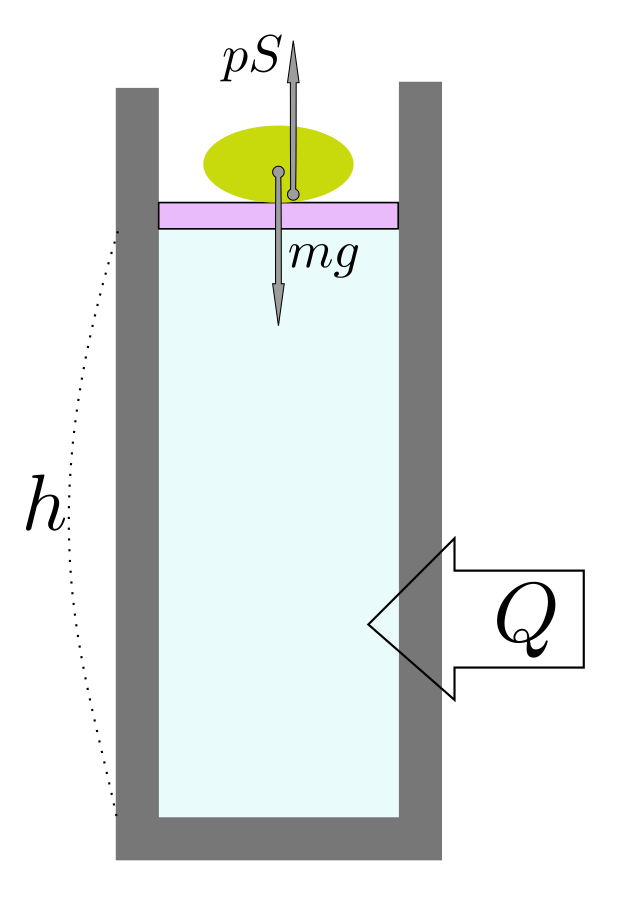
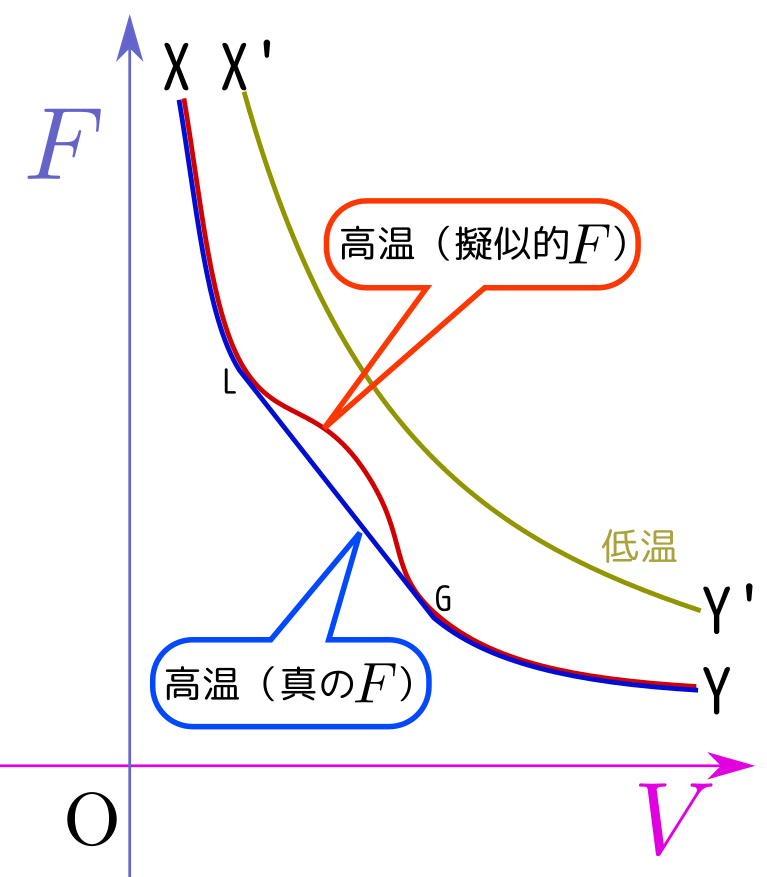
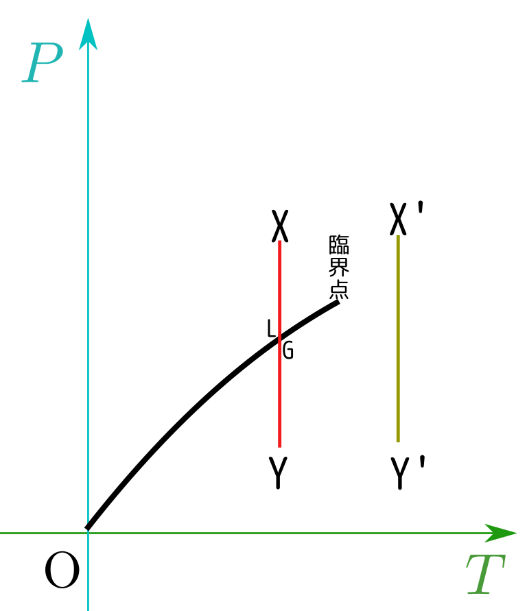
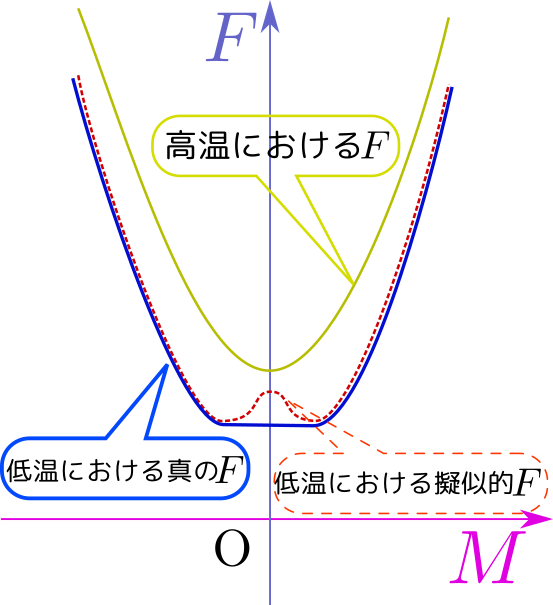

ある物質が液体の状態$(T;V_{\rm L},N)$から気体の状態$(T;V_{\rm G},N)$と変化したとすると、そのとき熱力学第1法則から、
（内部エネルギーの変化$U_{\rm G}-U_{\rm L}$）＝（最大吸収熱$Q_{\rm max}$）$-$（最大仕事$W_{\rm max}$）
という式が成立するだろう。ところで相転移の時の圧力（一定）を$p_v$と書くことにすると、最大仕事は$W_{\rm max}=p_v(V_{\rm G}-V_{\rm L})$である。
以上の式を整理すると、 $$ U_{\rm G}+p_vV_{\rm G}-\left(U_{\rm L}+p_v V_{\rm L}\right)=Q_{\rm max} $$ となる。吸収する熱が$H=U+pV$という量の差になっている。
この量（内部エネルギー$U$に$pV$を足したもの$H=U+pV$）の物理的意味を考えよう。これの変化がちょうど外部から（熱の形で）与えられたエネルギーになっていることを思うと、$H$は「等圧で断熱された環境におけるエネルギーのようなもの」として機能しているのである。
そこでこの$H$を「エンタルピー」と読んでエネルギーに似ているがエネルギーとは別の量として扱うことにする（エントロピーと名前は２文字違いだが全然違うものであることに注意すること）。
$H$の物理的意味をもう少し考えてみよう。図のように質量$m$の重りで蓋をされた気体を考える。簡単のために蓋の質量は無視する。また、外部は真空とする（大気圧は0とする）。この物体に働く力のつりあいから、$pS=mg$である。
この系は質量$m$の重りによってい圧力が$p={mg\over S}$で一定になるように保たれている。このような系に対して熱を与え気体を膨張させたとすると、物体が上に上がるだろう。その物体の位置エネルギーは、与えた熱から提供される。つまり、外部から熱という形で与えられたエネルギーは「気体の内部エネルギーの上昇」と「重りの位置上昇」に消費されることになる。この「重りの位置エネルギー」という系の外にある隠れたエネルギーも含めて熱の移動の収支を考えなくてはいけない。
そのエネルギーはもちろん$mgh$だが、計算してみると$mgh=pSh$であり、$Sh$が体積$V$であるとすれはこれは$pV$という項そのものである。
エンタルピーは、この「外部の気体を等圧に保ってくれるもののエネルギー」という「隠れたエネルギー」$pV$を内部エネルギーに足したものだと考えればよい。
ここで、ヘルムホルツ自由エネルギーも同様に「外部にある熱源（熱浴）から供給されるエネルギー」も含めたエネルギーだと解釈できたことを思い出そう。$U$から$F$を作るという計算（$-TS$を足す）が、$U$から$H$を作る計算（$pV$を足す）と、実は同様のことをやっていることになる。
もう少し数学的に考えてみよう。ヘルムホルツ自由エネルギー$F[T;V,N]$が内部エネルギー$U[S,V,N]$の$S\to T$のルジャンドル変換であったように、エンタルピー$H$は$U[S,V,N]$の$V\to p$というルジャンドル変換だと考えることもできる。対応を書いておくと $$ \begin{array}{ccl} T={\partial U[S,V,N]\over \partial S} & F[T;V,N]=U-S{\partial U\over \partial S}=&U-TS\\ p=-{\partial U[S,V,N] \over \partial V} & H[p;S,N]=U-V{\partial U\over \partial V}=&U+pV\\ \end{array} $$ となって、全く同様の計算をやっているのである。
微分形を使った表現を書いておこう。 $$ \mathrm dU=T\mathrm dS-p\mathrm dV+\mu\mathrm dN $$ だったから、$H=U+pV$の微分は $$ \mathrm dH =T\mathrm dS-p\mathrm dV+\mu\mathrm dN+\mathrm pV+p\mathrm dV =T\mathrm dS+V\mathrm dp+\mu\mathrm dN $$ となる。$H[p;S,N]$は完全な熱力学関数である。
$U$は$S,V,N$の関数として考える。これは$S,V,N$を独立変数または別の言葉でいえば「コントロールできる変数」として考えているということである（この時、$T,p,\mu$は$U$の微分で与えられる「後から決まる変数」になる）。$F$は等温環境で考えるから、温度$T$の方を「独立変数（コントロールできる変数）」と考える。だから$S\to T$のルジャンドル変換が必要なのである。
同様に、$V$ではなく$p$を独立変数にしたければ、$V\to p$のルジャンドル変換を行う。結果が$H$である。
こうなると、もう一歩進めてみよう、という野望を抱かないだろうか？？
をしたのだから、等温で等圧な環境に対しては、「$S\to T,V\to p$と二回のルジャンドル変換をしたい」と思いつく。実際それは、 $$ U\to \underbrace{U-TS}_F +pV=U-TS+pV $$ と考えてもよいし、 $$ U\to \underbrace{U+pV}_H-TS = U+pV-TS $$ と考えてもよい（結果は同じ）。すなわち$G=U-TS+pV$という量を考えれば、これが$T,p,N$で表現された完全な熱力学関数になりそうである。
これを「ギッブス自由エネルギー」と呼ぶ。4つ目の完全な熱力学関数である。
どのような状況で液相と気相の共存が起こるかをもう一度グラフで説明しよう。

↑の「高温」の状態（X'→Y'という変化）では$F$は常に下に凸である。しかし「低温」（X→G→L→Yという変化）では$F$に上に凸な「有り得ない」領域が出現する（この意味で、「擬似的な$F$」なのだ）。その領域を直線でつないだ「真の$F$」が実際に実現する状況だが、実はこの状況は図で「L」と示した（液体状態）と「G」と示した気体状態が共存した（いわばブレンドされた）状態になっている。ここでこのグラフの傾きは$-p$だから、「LからGへ」という直線の上では圧力一定である。
温度と圧力を横軸縦軸にしたグラフ↓の上ではX'→Y'の「高温」での変化も、X→L→G→Yの「低温」での変化も、どちらも縦線になる。

ただし、このグラフ上では、「L」点と「G」点が同じ点になる（$V$-$F$グラフでは直線である領域が$T$-$p$グラフでは一点に収縮する）。
ある物質が液体の状態$(T;V_{\rm L},N)$から気体の状態$(T;V_{\rm G},N)$と変化したとすると、そのとき熱力学第1法則から、
（内部エネルギーの変化$U_{\rm G}-U_{\rm L}$）＝（最大吸収熱$Q_{\rm max}$）$-$（最大仕事$W_{\rm max}$）
という式が成立するだろう。ところで相転移の時の圧力（一定）を$p_v$と書くことにすると、最大仕事は$W_{\rm max}=p_v(V_{\rm G}-V_{\rm L})$である。
以上の式を整理すると、 $$ U_{\rm G}+p_vV_{\rm G}-\left(U_{\rm L}+p_v V_{\rm L}\right)=Q_{\rm max} $$ となる。吸収する熱が$H=U+pV$という量の差になっている。
熱力学第１法則$\Delta U=Q-W$は、どんな状況でも成立する式である。
体積一定の状況では、$\Delta U=Q$になる（仕事をしないから）。
圧力一定の状況では、$\Delta (U+pV)=Q$になる（ということを↑で示した）。
よって圧力一定条件では$U$ではなく$H=U+pV$の方を「エネルギー」のように扱った方が楽になる、というのが$H$を導入する意味である。実際に実験するときには圧力一定という条件で行なうことも多いから、実験結果をまとめるときにもその方が意味がある式を作りやすい（なお、さらに「実際に実験するときには断熱じゃなく等温の環境下に置くことの方が多いだろう」と考えると$H$ではなく$G=H-TS$を使った方がよい、ということになる）。
液相←→気相の相転移が起こる圧力$p_v(T)$は$T$の関数である。
「気相と液相の境界線の微分方程式を立てたい」というモチベーションのもと、${\mathrm dp_v(T)\over \mathrm dT}$を考えよう。そのために、まずヘルムホルツ自由エネルギーの定義式を使って、 $$ F(T,V_{\rm L}(T,N),N)-F(T,V_{\rm G}(T,N),N)=p_v(T)(V_{\rm G}-V_{\rm L}) $$ と書く（液体から気体へと変化すると、左辺の分だけヘルムホルツ自由エネルギーが減り、その分が外部にする仕事（右辺）になる。
この式を$T$で微分する。$T$が全部で7箇所にあるが、${\partial F\over \partial T}=-S$を使うと、$F$の第１の引数にある$T$を微分したものが$-S$になることがわかる。また、$F$の第２の変数である$V$の中にある$T$を微分したときに${\partial F\over\partial V}{\mathrm dV\over \mathrm dT}$が出てくるが、これは右辺にも出てくる$p_v{\mathrm dV\over \mathrm dT}$とちょうど相殺する。よって残る微分の結果は $$ -S(T,V_{\rm L}(T,N),N)+S(T,V_{\rm G}(T,N),N)={\mathrm dp_v(T)\over \mathrm dT}(V_{\rm G}-V_{\rm L}) $$ となる。ここで右辺に$T$を掛けた$T\left(S(T,V_{\rm G}(T,N),N)-S(T,V_{\rm G}(T,N),N)\right)$は、液体→気体になったときのエントロピー変化（つまりは吸収する熱）と解釈できるから、 $$ Q_{{\rm L}\to{\rm G}}=T{\mathrm dp_v(T)\over \mathrm dT}(V_{\rm G}-V_{\rm L}) $$ から $$ {\mathrm dp_v(T)\over \mathrm dT}={Q_{{\rm L}\to{\rm G}}\over T(V_{\rm G}-V_{\rm L})} $$ という式を導ける。これがCrayperonの式である（この式は実験的にも支持される式となっている）。
ところで多くの場合、この式の右辺に出てくる量$Q_{{\rm L}\to{\rm G}},T,V_{\rm G}-V_{\rm L}$は正である。よって${\mathrm dp_v(T)\over \mathrm dT}$も正となり、$T$-$P$グラフは右上がりになる。
そうでない例が氷→水という「固体→液体」の相転移で、この場合は体積は固体の方が大きい（つまり、$V_{\rm L}-V_{r^m S}$が負）。よってこの相転移の相図では、$T$-$P$グラフは右下がりになる（もちろん、これも実験とあった結果である）。
Crayperonの式は $$ {\mathrm d p_v(T)\over\mathrm dt}={S_{\rm G}-S{\rm L}\over V_{\rm G}-V_{\rm L}} $$ と書くこともできる。これはMaxwellの関係式の一つ${\partial p\over\partial V}={\partial S\over \partial V}$に似ていることに気づいたろうか？（なつかしい人に出会えたか？）
似てはいるが、Maxwellの関係式が偏微分という「連続的な変化の変化量の計算」で書かれているのに対し、Crayperonの式は相転移の際の不連続なエントロピーと体積の変化を示している。ただどちらも$F$が$T,V,N$の関数としてちゃんと定義されているという条件から出てくるのは同じである（だから、この式が文字通りに破れるということは熱力学第２法則が破れていることを意味している）。
最後に、磁性体の相転移について簡単に話した。
磁性体の場合、$F$と磁化$M$でグラフを描くと、（ちょうどvan der Waalsの時の$F$と$V$のグラフのように）、低温では$F$が下でない領域が現れる（このあたりの事情は説明しない）。

すると低温では例によって共通接線を引いて補完した「真のヘルムホルツ自由エネルギー」に置き換えて考えねばならない。この場合エネルギー最低は下の直線部分になる（この直線上の状態は磁化を持つ二つの「底」の状態が「ブレンドされた」状態になっている）。
磁石というのは、高温状態から強い磁場の中でゆっくり冷やすことによって、磁化を持つが出現するようにしたものである。よってある温度より高温にすると（つまり臨界点を超えると）最低エネルギー状態は「磁化が0」の状態になる。